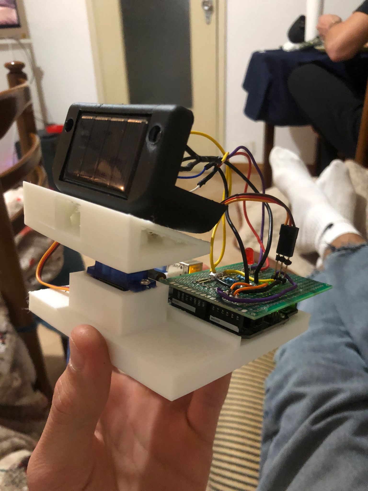

Arduino-based sun tracking system.
Single-axis solar tracker that automatically follows the sun using photoresistors and a servo motor. Built with Arduino, custom 3D-printed parts, and featuring real-time efficiency visualization through an LED indicator.
Arduino Uno • SG90 Servo • Photoresistors • 3D Printed PLA
~€43
7-8 hours ( the pcb took a while to solder )